A empresa "Os Batatas" está empenhada em enfrentar
os desafios da qualidade do ar e das mudanças climáticas.
Com uma equipe dedicada e anos de pesquisa, eles desenvolveram um produto inovador para promover um ambiente mais
saudável e sustentável. A empresa agradece a seus colaboradores e parceiros por tornar este projeto possível e
convida todos a se juntarem a eles na busca por um futuro mais limpo e saudável.